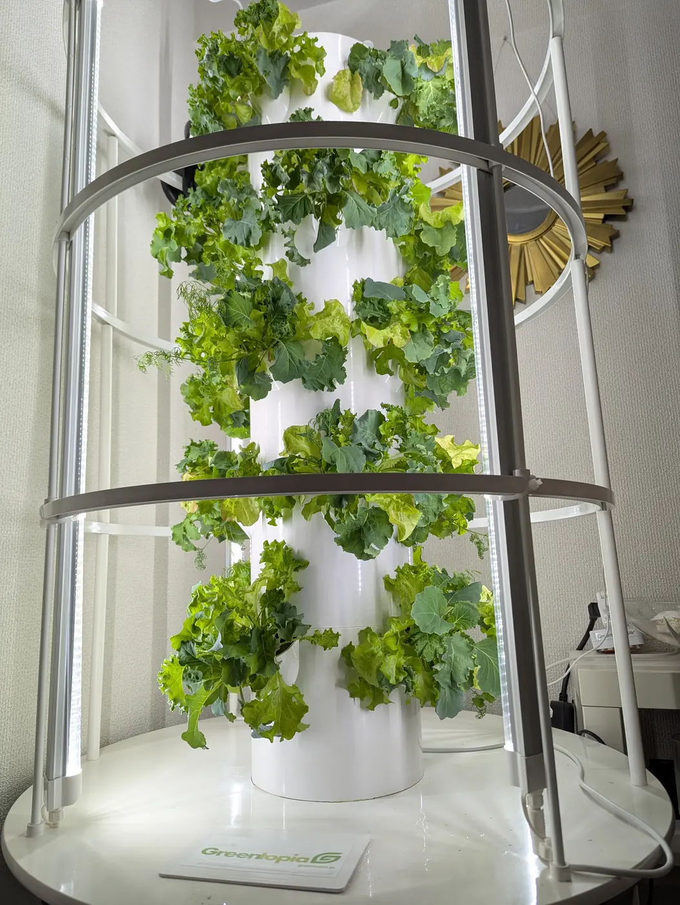

プログラム一覧
概要
すべてのスペースにカリキュラムが必要なわけではありません。タワーが1台あれば十分な場所もあります。私たちは、東京のご家庭、集合住宅、オフィス、コワーキングスペース、地域施設に水耕栽培のタワーファームやシステムを設置し、サポートしています。ベランダに1台のタワーから、居住者みんなで使う屋上農園まで、設置はすべてお任せいただき、育てるお手伝いをします。
気軽に始められます
ご家庭用タワーのリースは、最初の3か月がお試し期間として月額¥13,000、その後はお手入れのサポート内容に応じて月額¥11,000からです。配送・設置から使い方のご説明まで、すべてお任せください。リースプランを見る。建物、オフィス、コミュニティスペースについては、無料の現地調査のうえでお見積もりします。
含まれるもの
すべてのタワーリースには、配送、現地での設置、水・養分・光などの基本的なお手入れのご説明、リース終了時の回収またはリセットが含まれます。タワーは自動ポンプとタイマーで稼働するため、ときどきの養液の補充と収穫以外、毎日のお手入れは必要ありません。
苗と資材
お試し期間のお客さまには、スターターセットを無料でお付けしています。すでにタワーをお持ちの方や、ご自宅で水耕栽培をしている方にも、スターターセット、養液、苗をご用意できます。苗はロックウールキューブ1個につき¥200〜300で、1つのキューブには通常2〜4株が入っています。苗はオンラインフォームから、その他の資材はこちらからお問い合わせください。お手入れをお任せいただきたい場合は、月1回または週1回の訪問プランをお選びください。